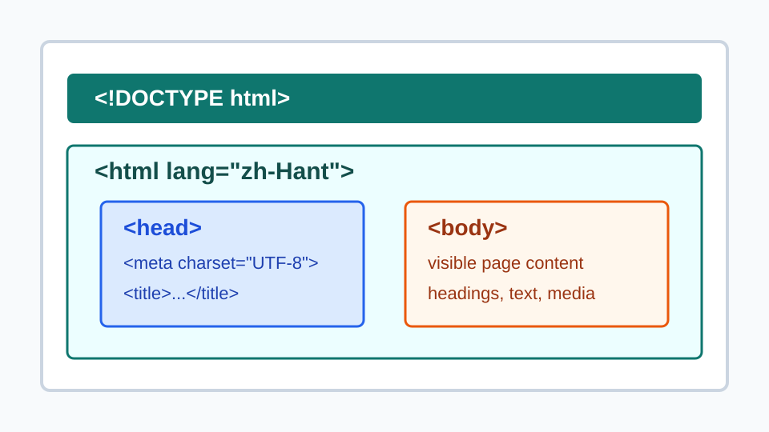
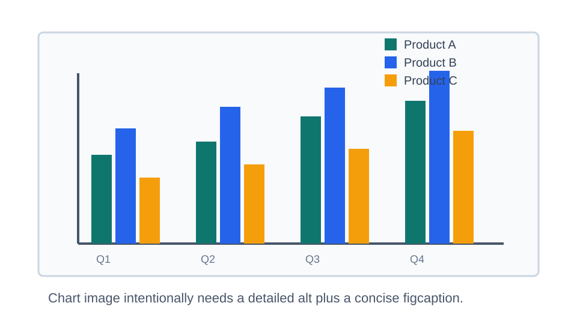
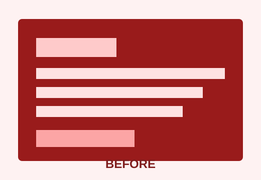
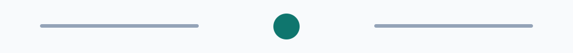

`figcaption` 可以放前面
<!DOCTYPE html>
<html lang="zh-Hant">
<head>
<meta charset="UTF-8">
<title>Document</title>
</head>
<body></body>
</html>對程式碼範例來說，caption 放前面常像標題，先告訴讀者這段程式碼的目的。
這個範例對應筆記中的判斷規則：`figure` 表示一組可獨立引用的內容，`figcaption` 是這組內容的說明；圖片、程式碼、表格、前後對照都可以放進 `figure`，但裝飾圖與單純排版容器不需要。
<figure>
<img
src="./images/html-structure.svg"
alt="HTML 文件結構圖，包含 doctype、html、head、meta、title 與 body 區塊">
<figcaption>
圖 1：HTML 文件的基本結構。
</figcaption>
</figure>這張圖可以被搬到附錄、投影片或其他段落仍保有意義，因此適合使用 `figure`。

<!DOCTYPE html>
<html lang="zh-Hant">
<head>
<meta charset="UTF-8">
<title>Document</title>
</head>
<body></body>
</html>對程式碼範例來說，caption 放前面常像標題，先告訴讀者這段程式碼的目的。
| 元素 | 用途 |
|---|---|
| `figure` | 包住可獨立引用的一組內容。 |
| `figcaption` | 提供這組內容的標題或說明。 |
若是資料表本身的標題，優先用 `table` 的 `caption`；若整個表格是文章中的附圖或附表，也可以外層再用 `figure`。
<img
src="./images/sales-chart.svg"
alt="長條圖顯示 A、B、C 三項產品在 Q1 到 Q4 的銷售量；B 產品四季皆最高，且 Q4 達到最高點">
<figcaption>
圖 2：2026 年各產品季度銷售比較。
</figcaption><img
src="./images/sales-chart.svg"
alt="圖 2：2026 年各產品季度銷售比較">
<figcaption>
圖 2：2026 年各產品季度銷售比較。
</figcaption>
<figure>
<img src="./images/before.svg" alt="改版前版面擁擠、間距不一致">
<img src="./images/after.svg" alt="改版後版面留白增加、層級更清楚">
<figcaption>
圖 3：同一個頁面區塊在改版前後的視覺對照。
</figcaption>
</figure>當兩張圖共同構成一個比較，放在同一個 `figure` 內比拆成兩個獨立 figure 更清楚。


<div class="decorative">
<img src="./images/decorative-divider.svg" alt="">
</div>裝飾線、背景圖、單純卡片外框不構成可獨立引用的內容，使用 `figure` 反而會增加不必要的語意。
<figure>
<img src="./images/html-structure.svg" alt="HTML 文件結構圖">
<div>
<figcaption>錯誤：figcaption 不是 figure 的直接子元素</figcaption>
</div>
</figure>`figcaption` 應該直接放在 `figure` 內，而且一個 `figure` 最多只放一個 `figcaption`。
| 情境 | 建議 | 理由 |
|---|---|---|
| 文章中的教學圖、流程圖、資料圖表 | 使用 `figure` + `figcaption` | 內容可被獨立引用，caption 能補充它在文章中的意義。 |
| 程式碼範例、附表、公式或插圖 | 可以使用 `figure` | `figure` 不限於圖片，只要它是一組自足的內容即可。 |
| 單純頭像、icon、裝飾線 | 通常不要使用 `figure` | 它們不是可獨立引用的內容單元；裝飾圖可用 `alt=""`。 |
| 只為了排版加外框、陰影、格線 | 使用 `div` 或 CSS | `figure` 是語意元素，不是通用樣式容器。 |
| 圖片有可見說明，也需要讀屏替代文字 | `alt` 與 `figcaption` 分工撰寫 | `alt` 描述圖片本身；`figcaption` 提供可見標題、來源、脈絡或結論。 |